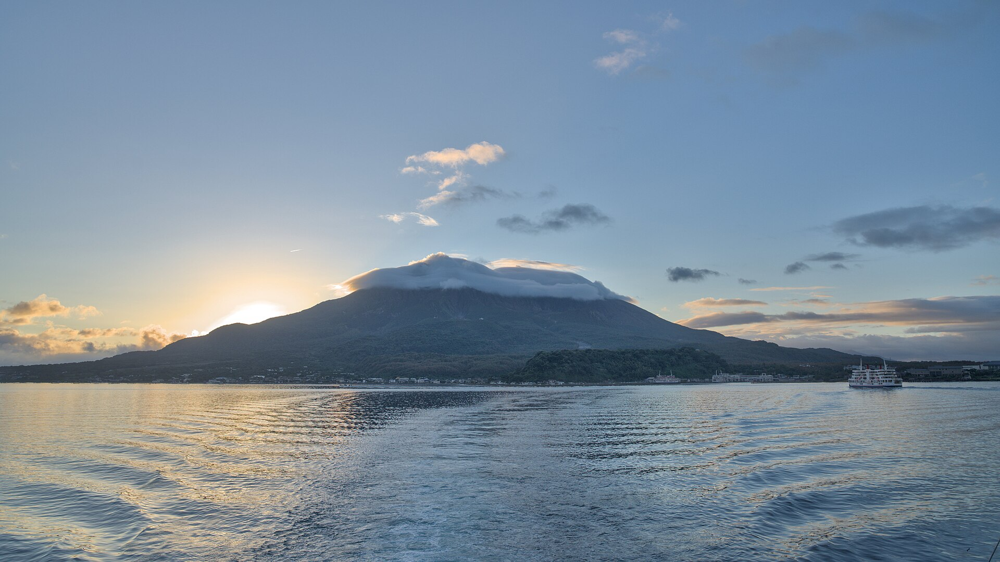
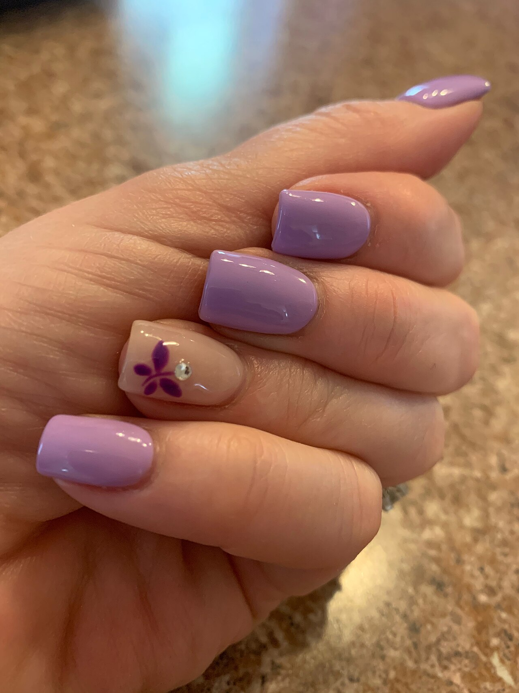
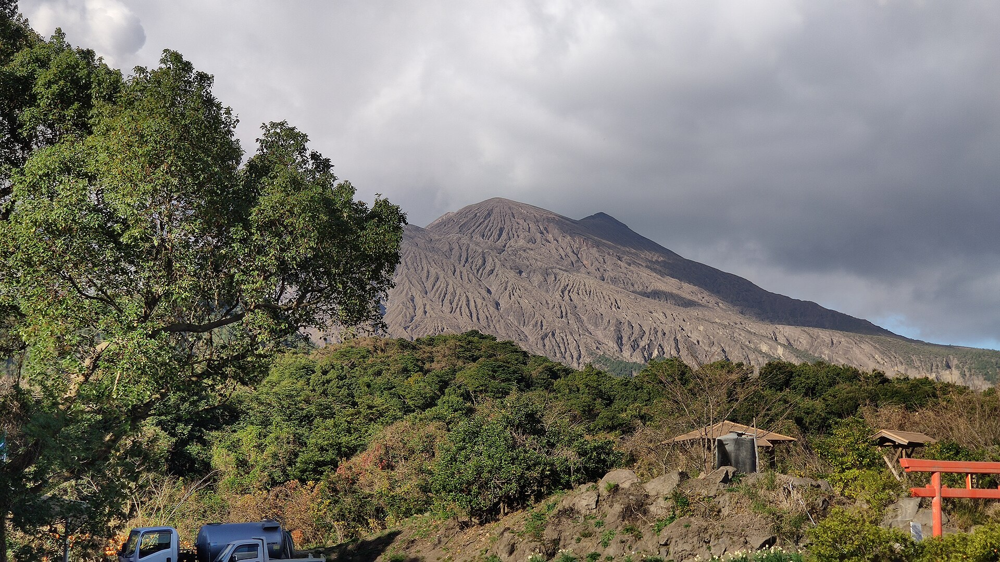
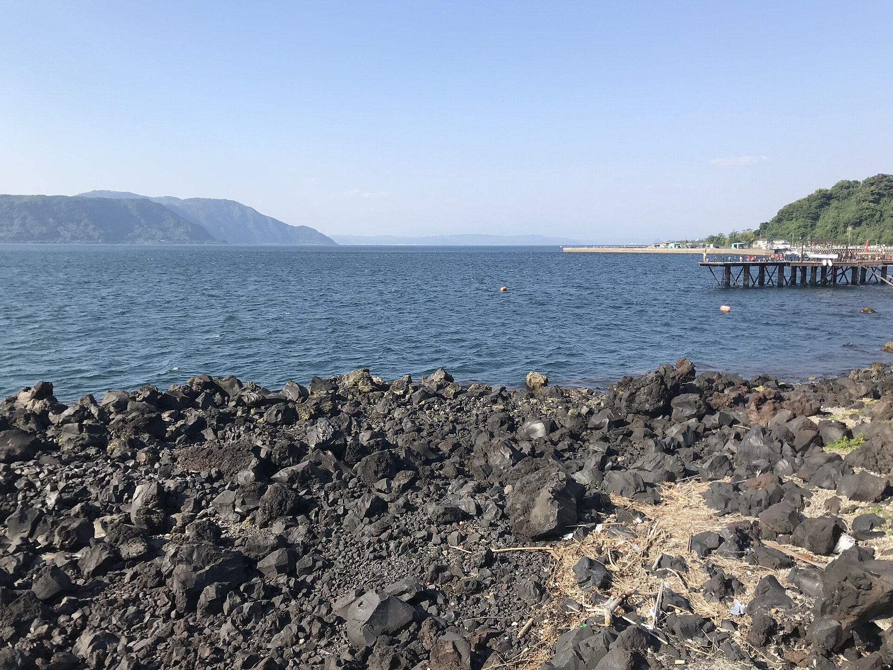
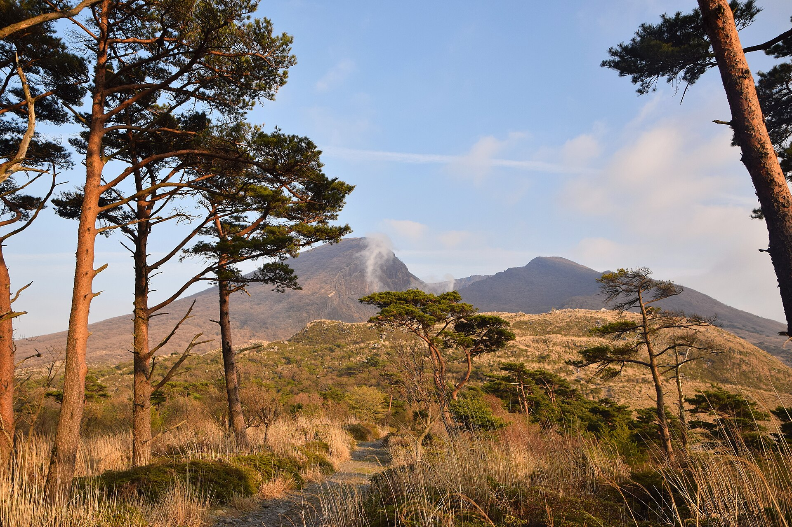

桜島を望む町で、指先に朝を。
写真はイメージ素材です(桜島・錦江湾、隼人町の実際の景色とは異なる場合があります)。
桜島を望む町で、指先に朝をひとつ。
salon de Rise(サロン ド リセ)
霧島市隼人町のネイルサロン
錦江湾の朝の空のように、毎日の始まりに、指先でそっと光を足す。そんなイメージでお届けします。SALON
霧島市隼人町の、ネイルサロン
鹿児島県霧島市隼人町にある、ネイルサロンです。
桜島や錦江湾、霧島連山に囲まれた土地で、指先を整える時間をお過ごしください。
施術の詳細・メニューは 準備中(お問い合わせください)
最新の作品はInstagramでご覧いただけます。

CONSULT
ご相談ください
気になることは、まずお気軽にお問い合わせください。
- ネイル施術全般(詳細は準備中)
- 仕上がりのイメージ相談(詳細はお問い合わせください)
対応内容の詳細は 準備中(お問い合わせください)
FLOW
ご来店までの流れ(イメージ)
- STEP 1お問い合わせご希望やご不明点をお伝えください。ご連絡方法の詳細は 準備中(お問い合わせください)
- STEP 2ご案内ご案内の内容は、ご相談に応じて異なります。詳細はお問い合わせください。
- STEP 3ご来店ご来店の日時・方法など、詳細はお問い合わせください。
ご予約方法・営業時間は 準備中(お問い合わせください)
AREA
桜島を望む町、隼人町
霧島市隼人町は、錦江湾の向こうに桜島を望み、北には霧島連山が連なる土地です。サロンは隼人町小田にあります。



写真はイメージ素材です。鹿児島市側からの錦江湾や霧島連山など、隼人町の実際の景色とは異なる場合があります。
鹿児島県霧島市隼人町小田70-28